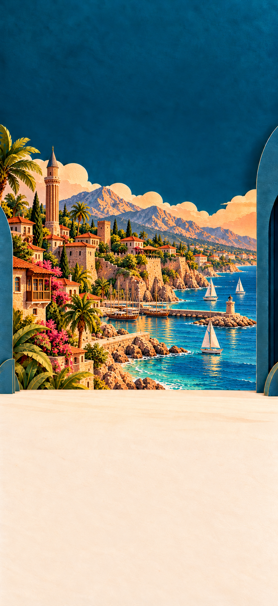
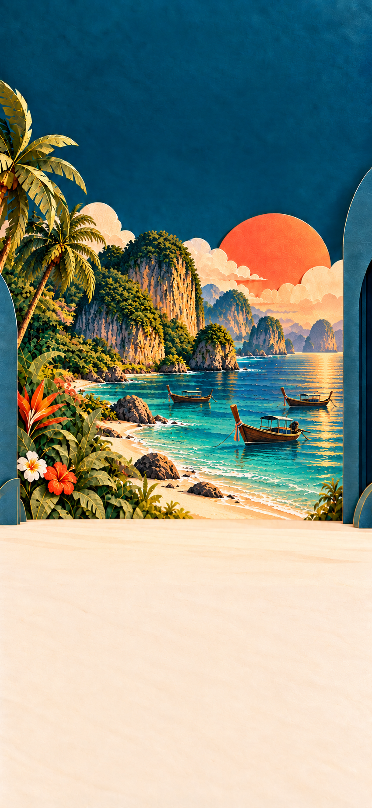

Travary · Wave C
Four onboarding scenery stills · 14 October 2026 · Owner approval pending.
Handoff · Exact prompts and sources · Validation and hashes

Antalya · 851 × 1848 · review readyMilan · 851 × 1848 · review ready
Phuket · 851 × 1848 · review readyTaipei · 851 × 1848 · review ready